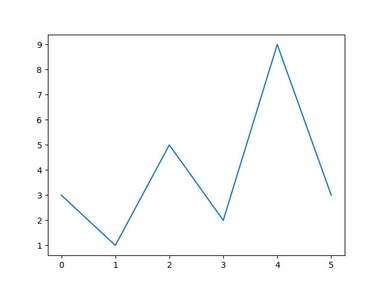
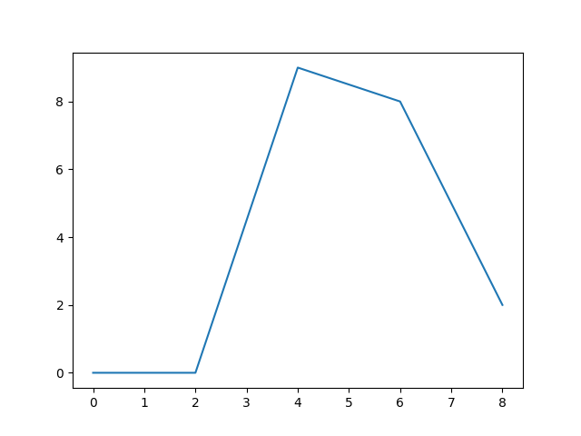
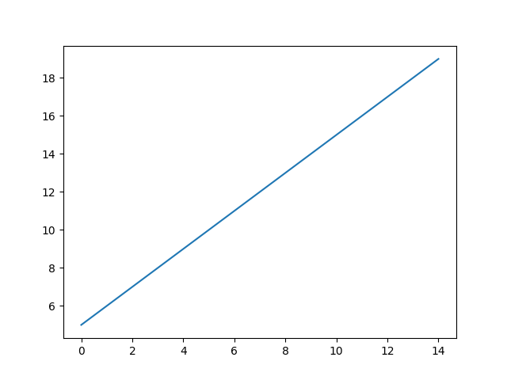
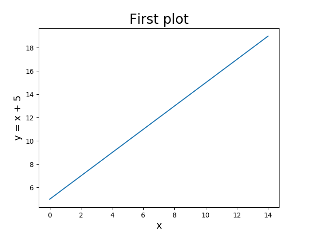
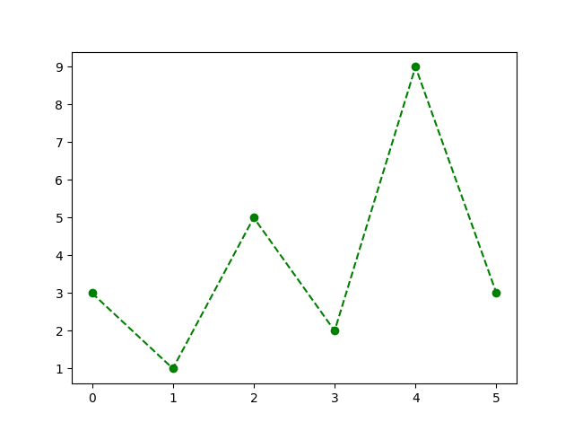
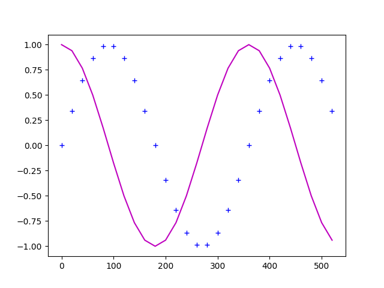
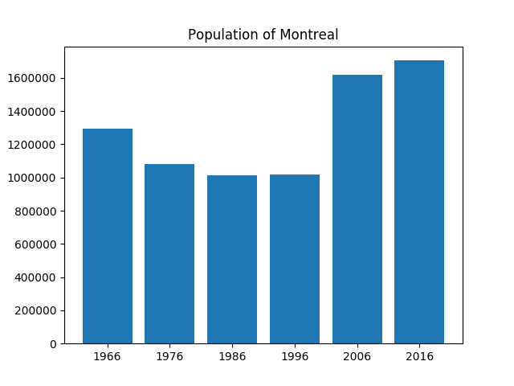

Comparing data structures
Data structures — list, tuples, sets and dictionaries can be compared for equality using == operator.
1# Lists, order matters2>>> grades1 = [85, 80, 100]3>>> grades2 = [85, 80, 100]4>>> grades3 = [85, 100, 80]56# True only when all elements are equal in order7>>> grades1 == grades28True9>>> grades2 == grades310False111213# tuples, order matters14>>> point1 = (1, 1, 2)15>>> point2 = (1, 2, 1)16>>> point1 != point217True181920# sets, order does not matter21>>> fruits1 = {"apple", "orange", "banana"}22>>> fruits2 = {"orange", "apple", "banana"}2324# True only when sets are of equal length and both sets contain same elements25>>> fruits1 == fruits226True27>>> fruits1 == {"apple", "orange", "banana", "grapes"}28False2930# dictionaries, order does not matter31>>> phonebook1 = {"A": 5140001000, "B": 5140002000, "C": 5140003000 }32>>> phonebook2 = { "B": 5140002000, "A": 5140001000, "C": 5140003000 }3334# True only when dictionaries are of equal length and35# both contain same key-value pairs36>>> phonebook1 == phonebook237True38>>> phonebook1 == {"A": 4381001000, "B": 5140002000, "C": 5140003000 }39False404142# Works for nested structures as well43>>> points1 = [(1, 1), (2, 10)]44>>> points2 = [(1, 1), (2, 10)]45>>> points1 == points246True47>>> points1 == [(1, 1), (2, 5)]48False4950>>> student1 = {"name": "Reza", "grades": [90, 100, 100]}51>>> student1 == {"name": "Reza", "grades": [90, 100, 90]}52False

Writing & importing modules
-
We have seen how to import a module from Python library using import statement e.g. import math
-
What are modules exactly?
- A module is simply a Python file containing definitions and statements.
- Every .py file is a module. The name of the module is the name of the file.
-
Rules for naming modules
- A Python file that is supposed to be a module must follow same naming rules as variable names
- Module names can only start with letters a-z, A-Z or an underscore and must only contain these letters, digits and underscores.
Try it!
Create a file geometry.py with the following code:
1import math234def sine(x):5 """Compute sine of a given angle.67 Args:8 x: a float for angle in degrees910 Returns: a float11 """12 return math.sin(math.radians(x))131415def euclidean_distance(p1, p2):16 """17 Computes Euclidean distance between two 2D points.1819 Args:20 p1: list/tuple of length 221 p2: list/tuple of length 22223 Returns: the euclidean distance as a float24 """25 d = (p1[0] - p2[0]) ** 2 + (p1[1] - p2[1]) ** 226 return d ** 0.5
Now in another Python file (in the same directory), we can import the geometry module and use functions inside it:
1# Import functions from the module2from geometry import euclidean_distance, sine34# Call the sine function5print(sine(90))67dist = euclidean_distance((1, 1), (2, 3)) # tuples8print(dist) # 2.23606797749979
Some observations:
- When we import a module all code inside that module is executed.
- This means that if the module contains statements they will also be executed.
- Try adding some statement such as print("hello") in geometry module outside the functions and import the module to see what happens.
__name__ AND __main__
-
When we write a module there might be code that we would like to see executed all the time, and another code that we would like to be executed only if the module is the program that we are actually running.
-
To achieve this we need to learn about __name__ and __main__
-
All we need to know for now is that __name__ is a special variable that the interpreter initialize whenever it executes a module.
-
When a module is executed, the interpreter does the following:
- sets the value of __name__ for that module
- executes all the code in the module.
-
Each module has its own __name__ variable.
-
When we execute a module as the main program, then the variable __name__ for this module is set to be "__main__"
-
When a module is executed as part of an import statement from another module, then its __name__ variable is set to be equal to the name of the module, which is name of the Python file.
- For instance, when geometry.py is executed because another program imports it, then its variable __name__ is set to be geometry.
-
After the variable __name__ is set, the interpreter executes the code one statement at a time from top to bottom.
-
If there is code we would like to see executed only when the module is executed as the main program, then we should add the following statement:
1if __name__ == "__main__":2 # any statement we like3 print("This is the main program!")
Matplotlib
- Matplotlib is an extensive Python library commonly used to generate different types of plots.
- Matplotlib is an external library and to use it we have to install it.
- If you use Thonny, go to Tools -> Manage packages. Type matplotlib on the
search bar and press “Find package from PyPI”. Then click Install.
- If you do not have Thonny, you can do so by typing the following commands in the terminal:
python -m pip install -U pip python -m pip install -U matplotlib
matplotlib.pyplot
-
matplotlib.pyplot is a module in the package Matplotlib.
-
This is the module we’ll be using to create plots.
-
To use it, we first need to import it
import matplotlib.pyplot as plt -
For more details: https://matplotlib.org/devdocs/api/pyplot_summary.html
Example – A Line plot
We can use the function plot to create a line plot between the points in the input sequence.
1import matplotlib.pyplot as plt23some_numbers = [3, 1, 5, 2, 9, 3]4plt.plot(some_numbers)5plt.show() # display figure
Note that:
- We have provided only one input to the function plot.
- If we do that, then the input values are going to be considered as the y-coordinates. Their corresponding x-coordinates are the indices of the list.
- In the example, we plot the following points:
Example - two inputs
1import matplotlib.pyplot as plt23x_coord = range(0, 10, 2)4y_coord = [0, 0, 9, 8, 2]5plt.plot(x_coord, y_coord)6plt.show()
Example - a linear function
Using pyplot, we can plot the graph of the linear function .
1import matplotlib.pyplot as plt23x_coord = range(15)4y_coord = []56for x in x_coord:7 y_coord.append(x + 5)89plt.plot(x_coord, y_coord)10plt.show()
Plot title and axis labels
We can add more information about our plots to the figure.
-
plt.title(label): takes as argument a string and adds the title label to the figure.
-
plt.xlabel(label): takes as argument a string and sets the label for the x-axis.
-
plt.ylabel(label): takes as argument a string and sets the label for the y-axis.
-
We can choose the font size of the labels, by passing the info as argument as follows:
plt.title("First plot", fontsize=22)
1import matplotlib.pyplot as plt23x_coord = range(15)4y_coord = []56for x in x_coord:7 y_coord.append(x + 5)89plt.plot(x_coord, y_coord)1011plt.title("First plot", fontsize=20)12plt.xlabel("x", fontsize=14)13plt.ylabel("y = x + 5", fontsize=14)1415plt.show()
Colors and markers
- We can chose the style/color of the plots, the style/size of the markets, etc.
- Here is just a taste:
You can check out the documentation here:
https://matplotlib.org/stable/api/_as_gen/matplotlib.pyplot.plot.html
How to use these?
- The function plot can take as arguments two lists (for x and y coordinates) and a format string.
- The format string consists of three parts: [marker][line][color]. Each part is optional.
1import matplotlib.pyplot as plt23some_numbers = [3, 1, 5, 2, 9, 3]45# circle marker, dashed line, green6plt.plot(some_numbers, "o--g")7plt.show() # display figure
Multiple plots in same figure
1import matplotlib.pyplot as plt2from math import sin, cos, radians34x_coord = range(0, 540, 20)5my_sin = []6for x in x_coord:7 my_sin.append(sin(radians(x)))89my_cos = []10for x in x_coord:11 my_cos.append(cos(radians(x)))1213# + marker, blue color14plt.plot(x_coord, my_sin, '+b')1516# magenta color17plt.plot(x_coord, my_cos, 'm')18plt.show()
Saving a figure
- We can use the function plt.savefig() to save the figure we created.
- The function takes as argument the file name (a string).
1import matplotlib.pyplot as plt2from math import sin, radians34x_coord = range(0, 540, 20)5my_sin = []6for x in x_coord:7 my_sin.append(sin(radians(x)))89plt.plot(x_coord, my_sin, 'm')1011# the figure won't be displayed, # but saved in my_sin.png12plt.savefig("myplot.png")
Bar Plots
When working with data that can be broken down into categories, it might be useful for us to use a bar plot instead.
Consider the following example:
1import matplotlib.pyplot as plt23mtl_pop = [1293992, 1080545, 1015420, 1016376, 1620693, 1704694]4years = ['1966', '1976', '1986', '1996', '2006', '2016']56plt.bar(years, mtl_pop)78plt.title("Population of Montreal")9plt.show()